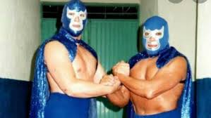
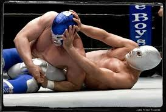
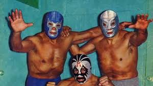
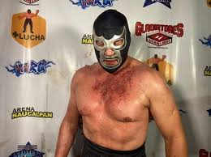

Nombre real: Alejandro Muñoz Moreno
Fecha de nacimiento: 24 de abril de 1922
Fallecimiento: 16 de diciembre de 2000
Alias: Blue Demon, El Manotas
Origen: García, Nuevo León, México
Debutó en 1948 como Blue Demon. Se entrenó junto a su amigo y posteriormente rival El Santo. Rápidamente ganó fama por su fuerza y estilo técnico.
Una de las rivalidades más legendarias fue contra El Santo. Logró derrotarlo en una lucha de máscara contra máscara, manteniéndose invicto en ese tipo de combates hasta su retiro.
Participó en más de 25 películas entre los años 60 y 70, consolidando su imagen como héroe popular junto a El Santo y Mil Máscaras.
Nunca perdió su máscara en combate. Su hijo adoptivo sigue luchando actualmente bajo el nombre de Blue Demon Jr., manteniendo viva la leyenda.
Conocido por su seriedad y disciplina. Fue respetado por compañeros y fanáticos. Falleció en 2000, dejando un legado imborrable en la lucha libre mexicana.